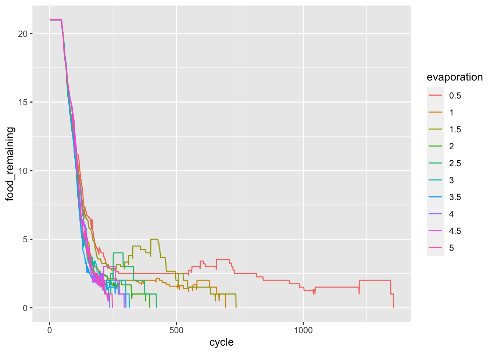
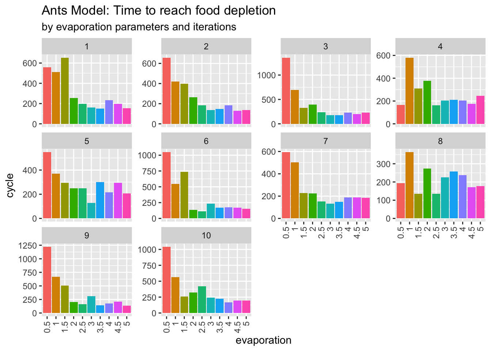

The primary goal of this “Ants” simulation is to comprehend the parameterisation as well as the iterative process utilising ‘.gaml’ codes. The idea in this model is that once the ants has food they set to diffuse the pheromon to either create chemical trails from their nest to promising food sources or releasing ‘danger’ alerts to nearby ants. Here, the evaporation parameter is used to change the time of evaporating the scent of pheromon.
According to the instruction, this simulation only tests the evaporation parameter, which ranges from 0.5 to 5 by 0.5 increment.
In GAMA, simply add an experiment to either visualise the simulation or run it in headless mode. It was only a few lines of code that needed to be changed.
Here is a glimpse of the data frame. It contains of four variables iteration, evaporation, cycle, and food_remaining. The values of iteration ranges between 0-9, evaporation between 0.5-5.0 by 0.5 increment, cycle between 0-400, and food_remaining between 0-21.
The first task is to understand how the evaporation affects the the time for food depletion. The 10 iterations were averaged for this outcome. Figure 1 demonstrates that the smallest parameter 0.5 extends food storage by the 1,356th time step. Parameters 1 and 1.5 have a similar effect keeping the food until the 740th time step, while 2 and above appear to be clustered between 250-400th time step.
## averaging the model iterationcleaned %>%group_by(evaporation, cycle) %>%summarise(food_remaining =mean(food_remaining)) -> cleaned1cleaned1 %>%mutate(evaporation =as.factor(evaporation)) %>%ggplot(aes(x = cycle, y = food_remaining)) +geom_line(aes(group = evaporation, colour = evaporation))

Figure 1: Time to food depletion by the evaporation parameter
Testing food depletion at every iteration.
Another interesting point is whether each iteration provides the same result. Indeed it does not show a consistent pattern. In Figure 2, it is shown that 0.5 significantly outweighed the time until food depletion in more than half of the executions. However, parameters 3 and above did not make a significant difference. As a result, it can be concluded that lower evaporation parameters slowed the time of food depletion in general, but this varied by iteration, and that higher parameter values did not make a significant difference in reaching food depletion.
cleaned %>%select(-food_remaining) %>%group_by(iteration, evaporation) %>%summarise_all(list(max)) %>% ungroup %>%mutate(iteration =rep(1:10, 10),evaporation =as.factor(evaporation)) -> sim_endsim_end %>%ggplot(aes(x = evaporation, y = cycle, fill = evaporation)) +geom_bar(stat ="identity") +facet_wrap(~iteration, scales ="free_y") +labs(title ="Ants Model: Time to reach food depletion", subtitle ="by evaporation parameters and iterations") +theme(legend.position ="none",axis.text.x =element_text(angle =90, vjust =0.5, hjust=1))

Figure 2: Time to reach food depletion by evaporation at each simulation run
The Full GAMA Code
/**** Name: AntsSimple* Author: WALLENTIN* Description:***/model antsglobal {int t <-1;//Evaporation value per cycle of the pheromonsfloat evaporation_per_cycle <-5.0 min:0.5 max:5.0;//Diffusion rate of the pheromonsfloat diffusion_rate const:true<-1.0 min:0.0 max:1.0;//Size of the gridint gridsize const:true<-75;//Number of ants to create//VH increasing the amount of antsint ants_number <-1000 min:1 max:1000 parameter:'Number of Ants:';//Variable to keep information about the food remainingint food_remaining update:list( ant_grid )count( each .food>0)<-10;//Center of the grid that will be considered as the nest of ants point center const:true<-{round( gridsize /2),round( gridsize /2)}; matrix<int> types <- matrix<int>(pgm_file('../images/environment75x75_scarce.pgm')); geometry shape <-square(gridsize); init {//Creation of the ants placed in the nest create ant number: ants_number with:[ location :: center ];}//Different actions triggered by an user interaction action press { point loc <- #user_location; list<ant> selected_agents <- ant overlapping(circle(10) at_location #user_location);write("press "+ loc.x+" "+ loc.y+" "+selected_agents);} action release {write("release");} action click {write("click");} action click2 {write("click2");}//Reflex to diffuse the pheromons among the grid reflex diffuse { diffuse var:road on:ant_grid proportion: diffusion_rate radius:2 propagation: gradient;}reflex save_result {// int(self): iteration// evaporation_per_cycle: evaporation_per_cycle// cycle = cycle// food_remaining = food_remaining save("simu:"+int(self)+";evaporation_per_cycle:"+ evaporation_per_cycle +";cycle:"+ cycle +";food_remaining:"+ food_remaining) to:"../results/results.txt" type:"text" rewrite:false;//to: "../results/results" + evaporation_per_cycle + ".txt" type: "text" rewrite: (cycle = 0) ? true: false;}}//Grid used to discretize space to place food in cellsgrid ant_grid width: gridsize height: gridsize neighbors:8{ bool isNestLocation <-( self distance_to center )<4; bool isFoodLocation <- types[grid_x , grid_y]=2; list<ant_grid> neighbours <- self neighbors_at 1;float road <-0.0 max:240.0 update:(road<=evaporation_per_cycle)?0.0: road-evaporation_per_cycle; rgb color <-rgb([ self.road>15?255:( isNestLocation ?125:0), self.road*30, self.road>15?255: food *50]) update:rgb([ self.road>15?255:( isNestLocation ?125:0),self.road*30, self.road>15?255: food *50]);int food <- isFoodLocation ?5:0;int nest const:true<-int(300-( self distance_to center ));}//Species ant that will movespecies ant skills:[ moving ]{ rgb color <- #red; ant_grid place function:ant_grid( location ); bool hasFood <-false; bool hasRoad <-false update: place .road>0.05;//Reflex to diffuse pheromon on the cell once the agent has food reflex diffuse_road when:hasFood=true{ant_grid(location).road<-ant_grid(location).road+100.0;}//Reflex to wander while the ant has no food reflex wandering when:(! hasFood )and(! hasRoad )and( place .food=0){do wander amplitude:120.0 speed:1.0;}//Reflex to search when the agent has no food nor pheromon road close reflex looking when:(! hasFood )and( hasRoad )and( place .food=0){ list<ant_grid> list_places <- place .neighbours; ant_grid goal <- list_places first_with( each .food>0);if goal != nil { location <- goal.location;}else{int min_nest <-( list_places min_of( each .nest)); list_places <- list_places sort(( each .nest= min_nest )? each .road:0.0); location <-point(last( list_places ));}}//Reflex to take reflex taking when:(! hasFood )and( place .food>0){ hasFood <-true; place .food<- place .food-1;}//Reflex to make the ant return to the nest once it has food reflex homing when:( hasFood )and(! place .isNestLocation){dogoto target:center speed:1.0;}//Reflex to drop food once the ant arrived at the nest reflex dropping when:( hasFood )and( place .isNestLocation){ hasFood <-false; heading <- heading -180;} aspect default{ draw circle(2.0) color: color;}}//Experiment simple to display ant and have user interactionexperiment Simple type:gui { parameter 'Evaporation:'var: evaporation_per_cycle; parameter 'Diffusion Rate:'var: diffusion_rate; output { display Ants refresh:every(2#cycles){ grid ant_grid; species ant aspect:default; graphics 'displayText'{ draw string( food_remaining ) size:24.0 at:{20,20} color:rgb('white');}//Event triggering the action passed in parameter event mouse_down action:press; event mouse_up action:release;} display Ants_2 refresh:every(2#cycles){ grid ant_grid; graphics 'displayText'{ draw string( food_remaining ) size:24.0 at:{20,20} color:rgb('white');} event mouse_down action:press; event mouse_up action:click2;}}}experiment Repeated type: batch repeat:10 keep_seed:true until: food_remaining <=0.0{ parameter 'Evaporation'var: evaporation_per_cycle min:0.5 max:5.0 step:0.5;}